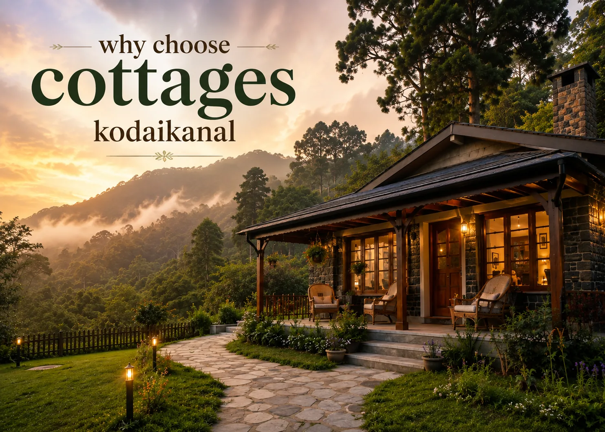

Kodaikanal · Park Tour
Kodaikanal Park Tour
A refreshing escape into nature's lap — gardens, viewpoints and a waterfall stop, on one easy half-day private cab route.
An easy in-town loop, no long drives
Within town, in one dedicated vehicle
Gardens, temples, a museum and a waterfall
Personalised pricing back within hours
The Tour
Everything You Need for the Park Loop
This tour bundles Kodaikanal's best gardens, viewpoints and a waterfall stop into one easy half-day booking.
Private Transportation
A dedicated cab for pickup, sightseeing and drop within town.
Park Entry Assistance
Help with entry at each garden and viewpoint stop.
Optional Guide
A driver-guide who can point out what's worth stopping for.
Leisure Time
Unhurried time at Bryant Park and Chettiar Park, not a rushed drive-by.
Parking & Tolls
Applicable parking, toll and driver charges included as per tour terms.
Local Coordination
One point of contact for the route and pickup — not a shared shuttle.
The Route
Park Tour Route
An easy half-day loop through Kodaikanal's temples, gardens, a museum and a waterfall.
Half Day · Parks & Viewpoints
10 StopsPickup & Kurunji Andavar Temple
Pickup from your hotel, then a stop at the temple famous for its once-in-12-years flower bloom.
Palani View & City View
Two open viewpoints looking out over the surrounding hills and town.
Chettiar Park & Jain Temple
A quieter garden stop, described locally as a hidden gem, followed by a nearby Jain temple.
Natural Science Museum
A short indoor stop, good for a break between garden visits.
Silver Cascade Falls & Vaigai Dam View
A roadside waterfall stop and an open dam viewpoint on the way back into town.
Bryant Park
The botanical garden's 700-plus plant species, right beside the lake.
Kodaikanal Lake & Drop-off
A last stop at the lake before returning to your hotel.
The exact route and stop order are confirmed against travel time and park operating hours on the day.
Destinations
Places Covered on This Tour
Bryant Park anchors the loop, with temples, viewpoints, a museum and a waterfall built around it.
Bryant Park — botanical gardens with over 700 plant species, beside the lake.
 Silver Cascade Falls
Silver Cascade Falls
 Palani View & City View
Palani View & City View
 Chettiar Park
Chettiar Park
 Kodaikanal Lake
Kodaikanal Lake
Tour Package Rates
Kodaikanal Park Tour Rates
Per-vehicle rates for the half-day park loop — final pricing is confirmed against travel dates, season and availability.
Rates are per vehicle for the half-day park loop, covering driver and fuel for the route. Confirm exact inclusions and current availability on WhatsApp.
Good to Know
What's Not Included
Exact inclusions and exclusions may vary by selected tour option.
Booking
How Booking Works
Four simple steps, and none of them involve waiting days for a callback.
Choose This Tour
Confirm the half-day Park Tour.
Share Your Details
Travel date, number of guests and pickup location.
Confirm the Cab
We check availability and confirm pricing.
Enjoy the Gardens
Pickup, ten stops and a comfortable drop-off.
Questions
Frequently Asked Questions
Route
Kurunji Andavar Temple, Palani View, City View, Chettiar Park, Jain Temple, the Natural Science Museum, Silver Cascade Falls, Vaigai Dam View, Bryant Park and Kodaikanal Lake.
Roughly 3-4 hours as a half-day tour, with optional combinations if you want to extend the day.
Logistics
Yes, the tour is built around private cab travel. Confirm vehicle type and capacity while booking.
Entry tickets are generally excluded unless specifically stated in the confirmed tour.
Booking
We check real availability and usually send pricing within a few hours of your enquiry.
Yes — see the full range of featured tours and ready-made packages on the Travels in Kodaikanal hub page.

Plan Your Kodaikanal Park Tour
Gardens, temples, a museum and a waterfall — one private cab, one simple half-day booking.